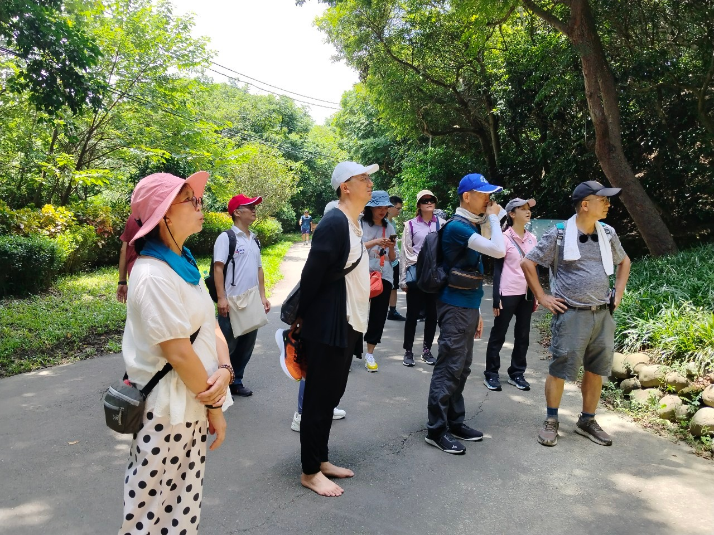

2024/08/04 十八尖山走讀歷史&手機APP辨識植物探索-探勘篇
瑞福老師分享
國琴老師、兆祥老師、袁立老師三位老師為了2024/08/23辦的活動事先演練。剛好我的班級要辦十八尖山的戶外活動，因為颱風延期，所以就一起參加這次的活動。 經由這次三位老師對十八尖山的介紹，我還真的對十八尖山有不一樣的認知，原來我平常只是當作健走，爬爬小山，它的歷史卻有那麼豐富。 國琴老師利用手機APP可以讓我們平常在外面對於不認識的植物也能找到梘關的資料。兆祥老師說明國家重力站的相關知識，以前的物理知識重新複習。袁立老師說明的石觀音和賽馬場，一個現在還看的到，一個只能看照片說明。因為有了這場解說，我們都對十八尖山改觀， 值得好好去研究它的現在和過去。學員也了解到在科學城社大除了課堂上的知識以外，是可以多關心身在這片的土地，學以致用，豐富了生活。最後感謝三位老師讓暑期課程有了完美的ending！
活動照片

